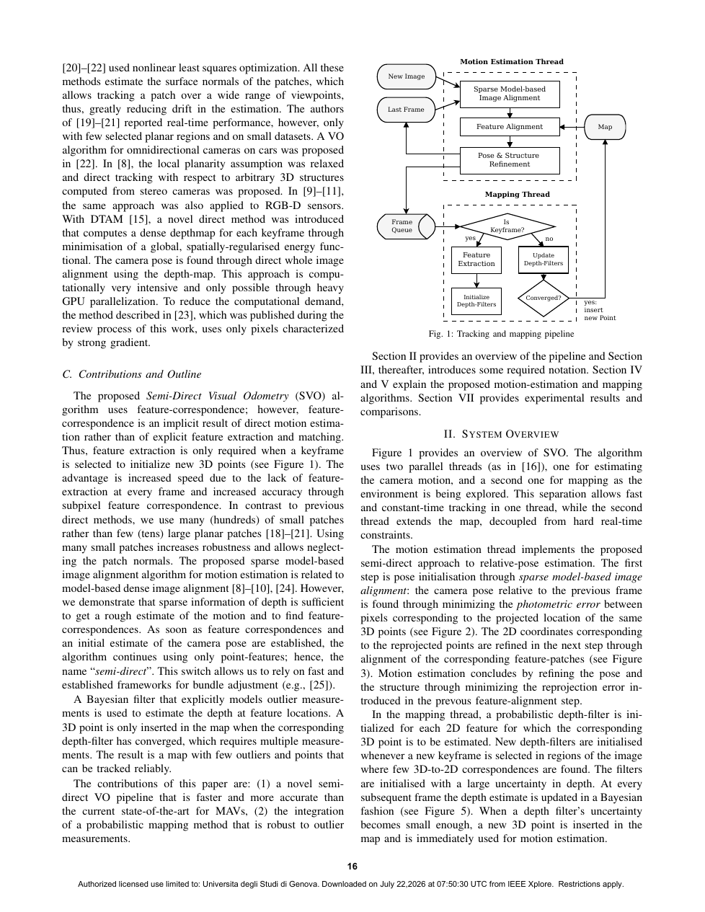

| Title | SVO: Fast Semi-Direct Monocular Visual Odometry |
| Authors | Christian Forster, Matia Pizzoli, Davide Scaramuzza |
| Affiliation | ETH Zurich / University of Zurich, Robotics and Perception Group |
| Venue | IEEE ICRA 2014, Hong Kong, pp. 15-22 |
| TL;DR | 提出 SVO (Semi-Direct Visual Odometry)——一种"半直接"单目视觉里程计算法，直接在像素强度上操作以消除昂贵的特征提取和鲁棒匹配步骤。核心创新：(1) 稀疏图像对齐——直接最小化稀疏像素块的强度残差估计帧间位姿；(2) 概率深度滤波——使用显式建模离群测量的贝叶斯滤波器估计 3D 点深度。在嵌入式计算机上以 55 FPS 实时运行，消费级笔记本上超过 300 FPS。开源发布后成为最广泛使用的单目 VO 系统之一。 |
flowchart TD
subgraph INPUT["Input"]
IMG["Monocular Image Stream"]
end
subgraph MOTION["Motion Estimation (Sparse Image Alignment)"]
SA["Sparse Image Alignment
min 6-DoF pose by direct
minimization of photo-error
on sparse 4x4 patches"]
FA["Feature Alignment
LK tracking along epipolar lines
for subpixel refinement"]
POSE["Pose + Structure Refinement
minimize reprojection error
of sparse map points"]
end
subgraph MAPPING["Mapping (Probabilistic Depth Filter)"]
KF["Keyframe Selection
based on scene overlap & distance"]
ES["Epipolar Search
along epipolar line for every
seed (candidate point)"]
BF["Bayesian Depth Filter
Gaussian + Uniform mixture
update depth distribution"]
CONVERGE["Depth Convergence Check
variance < threshold →
activate as map point"]
end
subgraph OUTPUT["Output"]
OUT["6-DoF Pose · 3D Map · 55-300+ FPS"]
end
IMG --> SA --> FA --> POSE
POSE --> KF --> ES --> BF --> CONVERGE
CONVERGE -->|"Converged"| OUT
CONVERGE -->|"Not converged"| ES
POSE -->|"Pose"| OUT
SA -.->|"Feedback: initial guess for FA"| FA
POSE -.->|"Refined pose for mapping"| KF
classDef input fill:#fef7ed,stroke:#f59e0b
classDef motion fill:#e8f0fe,stroke:#3b82f6
classDef mapping fill:#f0ebfd,stroke:#8b5cf6
classDef output fill:#e6f7ee,stroke:#10b981
class IMG input
class SA,FA,POSE motion
class KF,ES,BF,CONVERGE mapping
class OUT output
| 线程 | 功能 | 核心操作 | 频率 |
|---|---|---|---|
| Motion Estimation | 根据已有地图点估计当前帧的 6-DoF 位姿 | 稀疏图像对齐 → 特征对齐 → 位姿结构联合优化 | 每帧 |
| Mapping | 为新提取的种子点（seed）通过深度滤波估计 3D 位置 | 极线搜索 → 贝叶斯深度更新 → 收敛检测 | 仅关键帧 |
| 类别 | 内容 | 特性 |
|---|---|---|
| 输入 | 单目相机灰度图像流（连续帧） | MAV 向下相机或前向相机 |
| 输出 | 6-DoF 相机位姿（每帧）+ 稀疏 3D 地图点 | 55 FPS（嵌入式）/~300 FPS（笔记本） |
| 目标 | 实时高帧率 VO 用于 MAV 在 GPS 拒止环境的状态估计 | 亚像素精度、弱纹理鲁棒 |
核心问题：当匹配/三角化出现错误时（如遮挡、重复纹理、传感器噪声），传统最小二乘三角化会产生"灾难性"的深度错误（如把远处的点三角化成近处的点）。单个离群测量会使高斯分布均值和方差都剧烈偏离。
SVO 的解法：使用高斯+均匀混合模型——均匀分量 $\mathcal{U}(d)$ 表示"该测量可能是完全错误的"这一事实。在贝叶斯更新中，如果新观测与当前深度估计一致 → 内点概率 $\rho$ 增加 → 高斯部分得到加强；如果新观测与当前估计矛盾 → $\rho$ 减小 → 均匀分量吸收该测量 → 高斯估计几乎不受影响。这就是为什么 SVO 的深度滤波比直接三角化产生的离群点少——模型内置了对错误测量的容忍。
论文原图截图保存至 figures/ 子目录。

请将截图保存为figures/overview.png本图展示了SVO 的完整处理流程——(a) 输入灰度图像；(b) 稀疏图像对齐直接估计帧间位姿（红色箭头表示用于对齐的特征点）；(c) 特征对齐在极线上细化（绿色线显示搜索范围）；(d) 位姿+结构联合优化后的地图点和当前帧位姿；(e) 新提取的种子点（蓝色）等待深度收敛；(f) 概率深度滤波收敛后的正式地图点（红色）。两张子图分别展示了 SVO 在 MAV 向下相机和手持前向相机场景的实时运行效果。
| 参考文献 | 为什么重要 |
|---|---|
| Forster et al. (2017) — SVO 2.0: Semi-Direct Visual Odometry for Monocular and Multi-Camera Systems. TRO | SVO 的升级版——增加多相机、IMU、边缘化，升级为完整 VIO 系统 |
| Engel et al. (2014) — LSD-SLAM: Large-Scale Direct Monocular SLAM. ECCV | 直接法 SLAM 的代表作——对比 SVO 的稀疏策略，LSD-SLAM 选半稠密路线 |